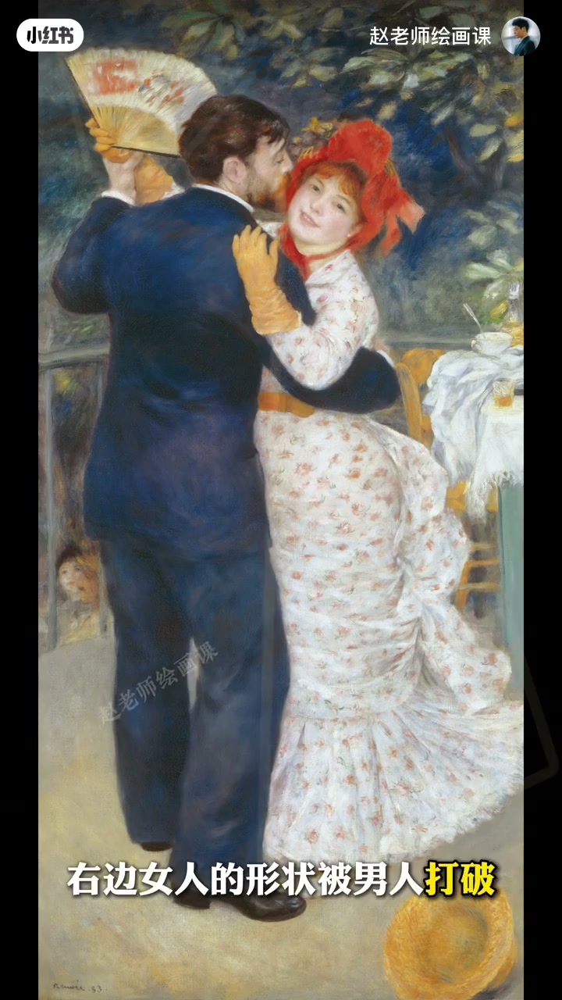

内容要点
安排好双人构图，秘密在轮廓形状：不是局部五官裁切，而是人物整体动态的外部轮廓。主动区分两人轮廓形与面积占比，画面才丰富好看。反例两人轮廓雷同、大小接近就平淡；正例奔跑女孩大三角对男人小矩形，动势张力拉满。雷诺阿《乡村舞会》矩形与三角相似中有变化，女形被男打破成侵入与融合，读出亲密；马奈则用扩张复杂对收缩简单暗示疏离。形状也可相似：夏尔丹《勤奋的母亲》同处三角，呼应母爱温情。作业看卡拉瓦乔《圣马太与天使》。
知识结构
整体外轮廓；区分形与面积；三角vs矩形。
雷诺阿侵入融合＝亲密；马奈扩张收缩＝疏离。
相似三角也可温情；练习卡拉瓦乔。
双人构图先设计两个外轮廓的形与大小关系——对比出张力，相似出亲密，形状在替你说话。
00:00-00:56什么是轮廓形：区分才好看
轮廓形不是局部特写，而是人物整体动态的外部轮廓。要做的是主动区分两人轮廓形与在画中的大小面积占比，自然得到丰富好看的画面。
反例轮廓雷同、大小差不多就平淡；奔跑女孩大三角对右侧男人较小矩形，形状与大小一对比，动势与张力瞬间拉满。00:14／00:46。
00:56-01:42雷诺阿亲密、马奈疏离
绘画底层原理一致。雷诺阿《乡村舞会》：左侧修长矩形、右侧近似三角，相似中带变化；更妙的是右边女人的形被男人打破，形成侵入与融合，读出亲密交织的情感。
马奈：左边女人轮廓宽大复杂营造主导感，右边男人收缩成小矩形——扩张与缩小、复杂与简单的对比，暗示疏离。01:14／01:30。

01:42-02:33相似形也可以：温情呼应
形状一定得分开吗？当然不是。夏尔丹《勤奋的母亲》两人同处相似三角形轮廓，呼应母爱的包容与温情；萨金特、雷诺阿亦有同理——相似形能天然营造含蓄亲密的情绪氛围。
小练习：卡拉瓦乔《圣马太与天使》里轮廓形如何处理、如何服务主题？01:48 夏尔丹可指认。
完整转录（64段）
以下文本由 Whisper medium 模型自动转录，可能存在少量识别误差，已尽可能修正。
你知道吗
要想安排好双人构图
秘密全藏在轮廓形状里
来我们先搞清楚什么是轮廓形状
它不是这样的
而是这样的
对是人物整体动态的外部轮廓
我们要做的正是这样
主动区分两个人物的轮廓形状
和在画中的大小面积占比
自然就会得到一个丰富又好看的画面了
不信我们看这个反例
这两个人的轮廓形是什么样子
是不是有点太雷同
大小呢
也差不多
所以我们就会觉得有点平淡
没有那么的吸引人
这就是区分轮廓形状的妙处
再比如这张
左边奔跑的女孩构成一个大的三角
右边男人是相对小的巨型
形状和大小一对比
画面的动势和张力瞬间就拉满了
除了摄影
绘画中的底层原理完全一致
印象派大师雷诺阿的《乡村武》中
左侧人物呈现修长的巨型
右边是一个近似的三角形
相思中带有变化
画面显得丰富又耐看
更妙的是
右边女人的形状被男人打破
形成一种侵入与融合的视觉状态
你是不是也感受到了一种亲密交织的情感
形状就是这么神奇
马奈的笔下
左边女人的轮廓宽大而复杂
营造出主导感
右边男人则收缩成一个小的巨型
这种扩张与缩小
复杂与简单的对比
巧妙地暗示出两人之间疏离的情感关系
那么形状一定得去分开吗?
当然不是
比如夏尔丹的勤奋的母亲
两个人都处于相似的三角形轮廓中
呼应出了一种母爱的包容与温情感
萨金特的康乃馨
雷诺阿的彩花
也同样运用了这一原理
相似的形状能天然地营造出一种含蓄而亲密的情绪氛围
好了
以上就是关于双人构图之轮廓型原理的解析
你对这个原理有没有更清晰一点呢?
我们试著做一个小练习
在卡拉瓦桥的圣马太与天使中
轮廓型的处理有什么讲究
又是如何服务于主题的
我在评论区等著大家
如果想系统掌握构图方法提升运用能力
请关注我10月底开班的构图系统课
我们下期再见
拜拜